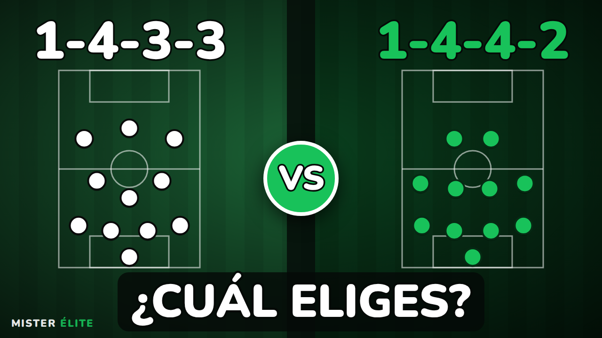
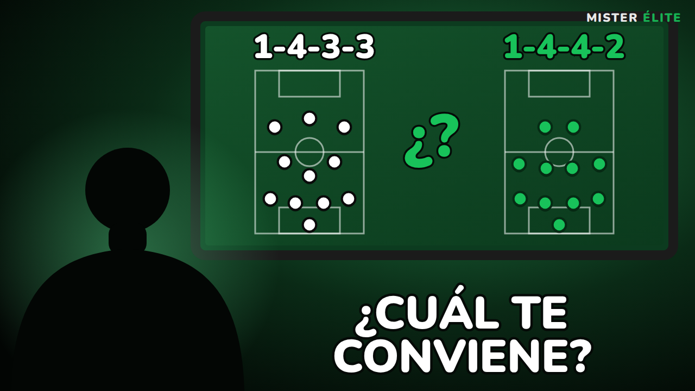
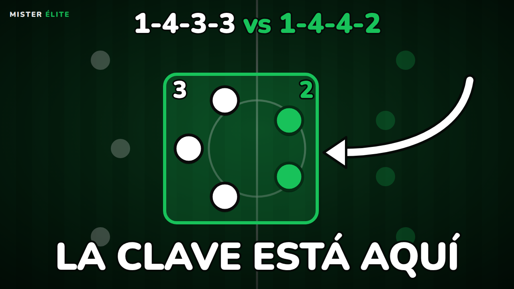
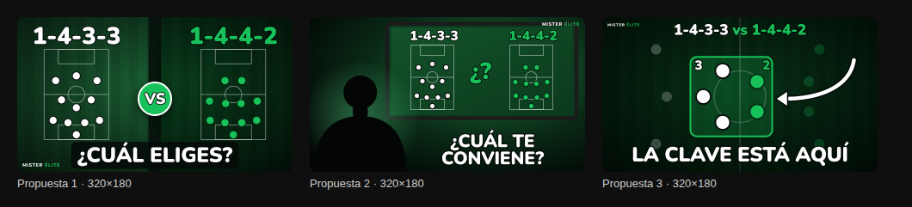
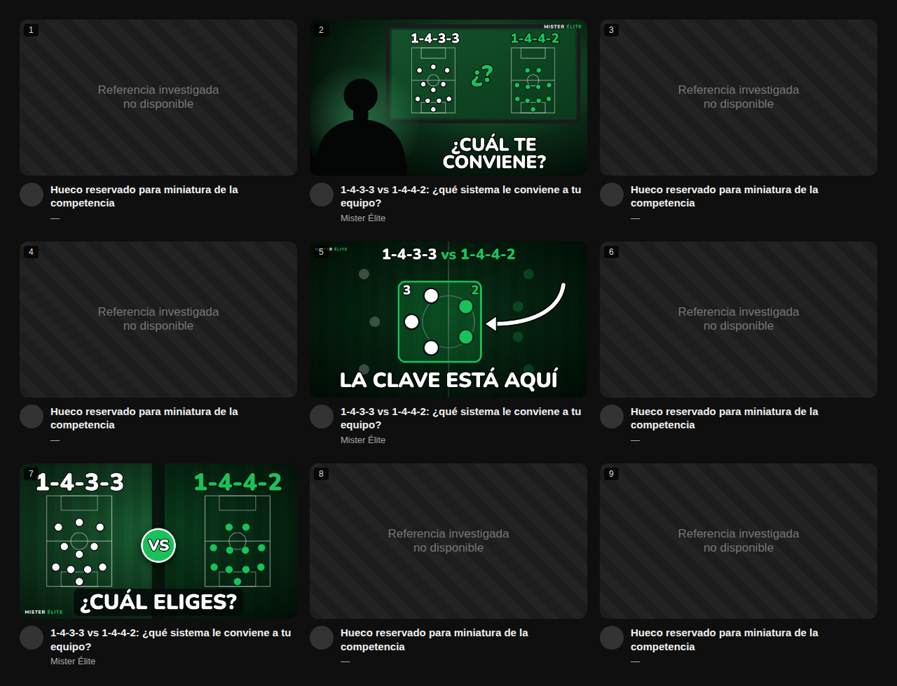

Miniaturas · «1-4-3-3 vs 1-4-4-2: ¿qué sistema le conviene a tu equipo?»
Mister Élite · reporte de investigación y propuestas · 26-09-2026
youtube.com (Chromium: net::ERR_TUNNEL_CONNECTION_FAILED).
Higgsfield (Parte 2) no está conectado a este entorno: no se generó ninguna imagen con IA y no se gastaron créditos.
Las tres propuestas son composiciones gráficas vectoriales hechas con código. Este reporte no contiene datos de rendimiento,
capturas ni fuentes de terceros, porque no se pudieron obtener y no se han inventado.1 · Fuentes y datos de rendimiento
Periodo utilizado: ninguno. Se tenían que revisar 60 días y, si no bastaba, ampliar a 180 días o a 12 meses. Ni siquiera se pudo abrir la primera búsqueda.
| # | Título | Canal | URL | Fecha | Vistas | Mediana del canal (n) | Ratio |
|---|---|---|---|---|---|---|---|
| No disponible: YouTube está bloqueado por la red del entorno. No se ha documentado ningún vídeo. | |||||||
Protocolo listo para ejecutarlo cuando haya acceso
- Búsquedas: «1433 vs 1442», «4-3-3 vs 4-4-2», «mejor sistema de juego fútbol», «comparativa sistemas de fútbol», «football formations explained», «4-3-3 tactics», «4-4-2 tactics», «football coaching tactics». Filtro: último mes o este año.
- Excluir videojuegos (FC/FIFA/eFootball) y vídeos de noticias o fichajes. Separar Shorts, directos y vídeos editados.
- Por cada candidato: título, canal, URL, fecha y vistas. Después, hasta 10 vídeos largos anteriores del mismo canal → mediana → ratio = vistas ÷ mediana, indicando n y el sesgo por antigüedad.
- Captura de cada miniatura y ficha: personas/caras, palabras (número), números/formaciones/flechas/pizarras, colores/contraste, punto de atención, promesa y legibilidad en móvil.
2 · Manual de miniaturas
inputs/manual-miniaturas.md no existe en el repositorio (tampoco inputs/cara/).
Se han aplicado las pautas de marca del encargo: negro, verde y blanco; poco texto; tipografía blanca, gruesa y redondeada con contorno oscuro;
como máximo dos líneas; una flecha como máximo; el mundo del entrenador; sin escudos ni futbolistas famosos.
3 · Hallazgos
Patrones observados: ninguno, porque sin investigación no hay observación.
Hipótesis de trabajo (sin validar con datos del nicho; se usaron para diseñar):
- Es probable que muchas miniaturas del nicho muestren dos formaciones completas enfrentadas. Si es así, el concepto 1 se parecería a ellas y el concepto 3, un solo detalle ampliado, destacaría más.
- A 320×180, los números de formación y una frase corta se leen. Las fichas de un campo completo se vuelven puntos pequeños.
- Una pregunta directa al entrenador («¿cuál eliges?») encaja con la promesa del vídeo sin exagerarla.
4 · Propuestas



Proceso
Sin Higgsfield, cada miniatura se ha compuesto en SVG + HTML (fuente Nunito Black incrustada) y se ha renderizado con Chromium a 1280×720
(_build/build.js). Los prompts de fondo para Higgsfield y las especificaciones de la capa gráfica están en prompts.md.
Precisión táctica comprobada: 1-4-3-3 = portero + 4 + 3 + 3 y 1-4-4-2 = portero + 4 + 4 + 2 en las propuestas 1 y 2. La propuesta 3 muestra solo la zona central y se presenta como detalle.
5 · Prueba a tamaño reducido (320×180)

- 01: la frase y los dos números se leen bien. Las 22 fichas se ven como puntos, aunque se distinguen las líneas de 3 y de 4.
- 02: la frase se lee, pero las formaciones de la pizarra quedan muy pequeñas. La silueta ocupa espacio sin aportar información táctica.
- 03: es la más legible: pocas fichas grandes, un solo punto de atención y una frase grande.
6 · Grilla simulada

Limitación: sin acceso a YouTube no hay miniaturas investigadas. Los 6 huecos son marcadores vacíos, no referencias reales. La grilla solo comprueba el tamaño y el contraste sobre un fondo oscuro tipo YouTube. No es un test con audiencia.
Clave: posición 2 = propuesta 02 · posición 5 = propuesta 03 · posición 7 = propuesta 01 · posiciones 1, 3, 4, 6, 8 y 9 = huecos para referencias.
7 · Recomendación
Miniatura 01 · El duelo táctico. Es la que comunica el tema de forma más literal: los dos sistemas completos y una pregunta al entrenador. No favorece a ninguno de los dos, y a 320×180 se leen la frase y los números. La 03 es la alternativa más fuerte en legibilidad y probablemente la más distinta dentro del nicho, pero su «3 vs 2» puede leerse como ventaja del 1-4-3-3. Conviene usarla como segunda variante en el test A/B de miniaturas de YouTube Studio, no como principal.
Sin predicción de CTR: la elección se basa en claridad y legibilidad, no en datos de audiencia. Conviene revisarla cuando se haga la investigación.
8 · Pendiente
- Permitir
youtube.comei.ytimg.comen el acceso de red del entorno y repetir la Parte 1. - Conectar Higgsfield y lanzar los prompts de
prompts.md(≤ 80 créditos), usandomodels_exploreyget_cost. - Añadir
inputs/manual-miniaturas.mdy, si se quiere al entrenador real,inputs/cara/. - Rehacer la grilla con 6 miniaturas reales investigadas.